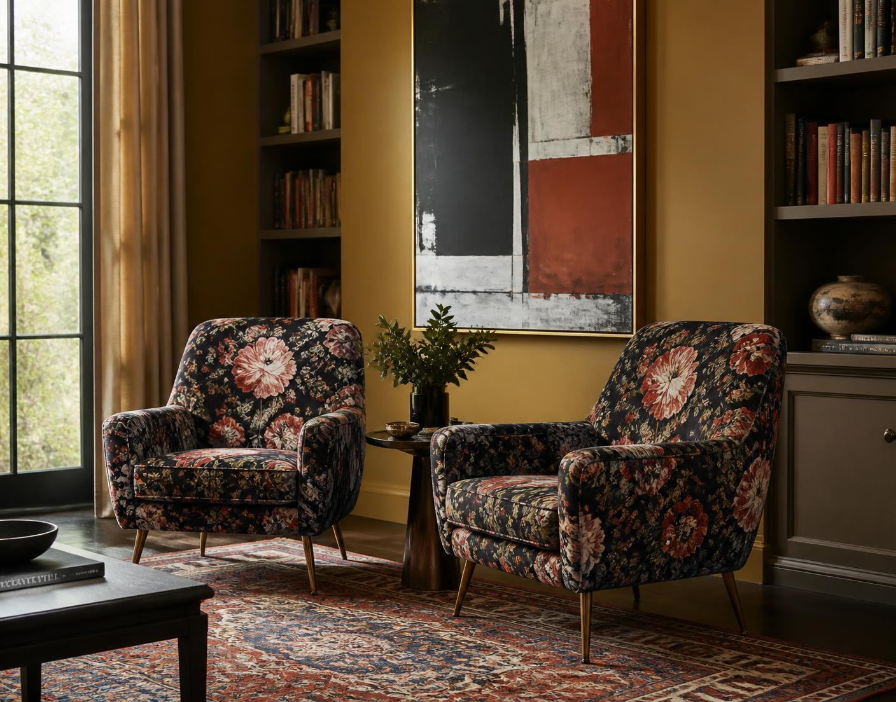
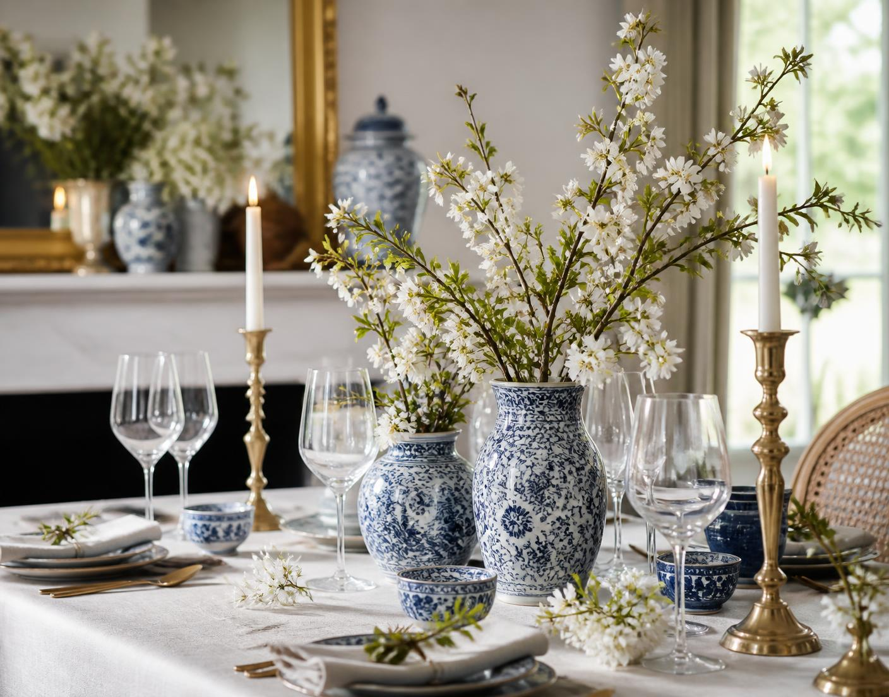
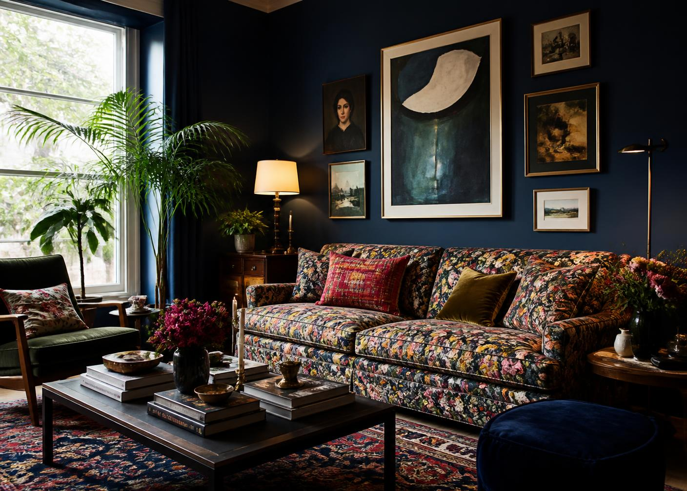
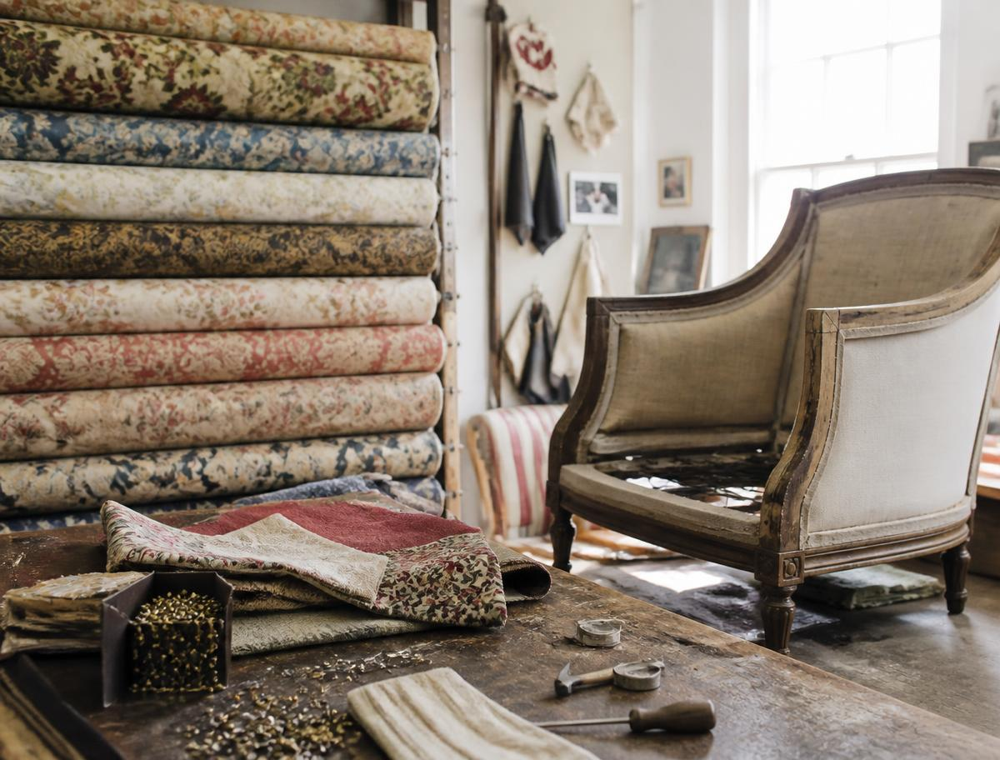

Accent Chairscurated
Nine shapes, one rule: a chair should be the loudest thing in the room or the quietest. Never in between.
Explore ↗
Table Editcelebrate
Mismatched vessels, brass candlesticks lit early, and a console that can hold the overflow.
Enter the rooms ↗Shop by Categoryplate by plate

Fig. 04 — The Blue RoomA room can hold exactly one argument. Everything else in it should be listening.
We build for houses that are already full — of books, of inherited rugs, of opinions. Which is why every plate in this archive is photographed twice: alone on paper, and again in a room that has been lived in.
Walk the roomsThis Month’s Platesselected

Fig. 09 — Fabric libraryTwo makers.thirty-six pieces
Iris draws in clay. Tomás cuts in oak. Between them the whole archive is designed, prototyped and finished within two workshops — one in Bangalore, one in Jaipur.
Meet the designers